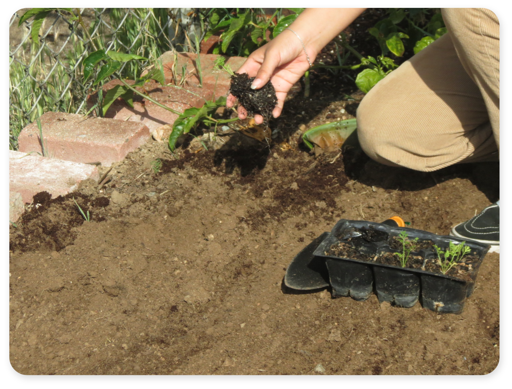

Sprouter UX/UI

 The Sprouter web experience gives users of all ages an accessable platform they can use to learn how to grow produce in their local area and connect with other users who are available to sell, buy, or trade produce.
The Sprouter web experience gives users of all ages an accessable platform they can use to learn how to grow produce in their local area and connect with other users who are available to sell, buy, or trade produce.
My Roles
Brand Strategist, Graphic Designer, Responsive Web Designer
Brand Promise
Inspired by a passion for cooking, interst in local produce, and the urge to connect with others interested in homegrown produce.
Objective
To design a web experience where users of all ages can learn how to grow produce, while having features for users who wish to sell, buy, or trade produce.
Outcome
An easy to use web experience, attracting users who want to learn how to grow produce; and others who want easy access to fresh local produce.
Target Audience
Youth (10-25), Suburban, Urban, Community/Family
Audience Needs
Easy to use web experience that allows users to get information about growing, selling, buying, or trading produce without becoming a member.


Challenge
Appealing to a diverse audiece, and satisfying their web experience needs; while encoraging users to continue using Sprouter.
Solution
To appeal to a diverse audiece I used a consistent navigation system with four main branches. This allows both novice and tech savy users to easily navigate through Sprouter. The opportunities to connect with other local users, and the ability to learn to grow and trade produce as a guest; encourage both frequent and irregular users to continue using Sprouter.
Initial Sketches


Design Process
In my initial sketches and wireframes, I focusesd on keeping the page presentation and navigation consistent so younger and older users can easily navigate the webpage across devices. I kept a fixed bottom menu and used the top area for the logo and page title. Users can use the bottom menu to navigate through all of Sprouter’s main features. This gives both novice and tech savy users a straighforward web experience.
I drew a detailed sketch, because my earlier sketches were lacking defined content areas. So I added the details to make sure each section would fit the content meant to be inside. However, when I created the wireframes, I stripped down many of the extra details and focused on the heiarchy and composition of the content areas.
Wireframes
 Prototypes & Story
Prototypes & Story
These prototypes were made from my first round of sketches and wireframes where my content areas were loosley defined. At the time I was more focused on defining the brand and devloping the mark and other elements to match the brand's goals. I continued to redefine the content ares in these layouts and doing this gave me some ideas for Sprouter's branding.
My explorations in the web experience helped me develop Sprouter’s branding further. As I was making wireframes, I worked with the color scheme of the brand. Adding a third color to the two color scheme I had been using, allowed me to layer elments mor cohesively. The new compositions defined distint sections for the different content areas. Continuing to experiment with both the branding and web experience allowed them to develop together.

Final Deliverables